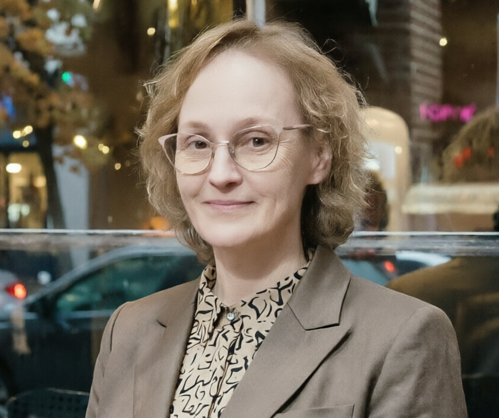
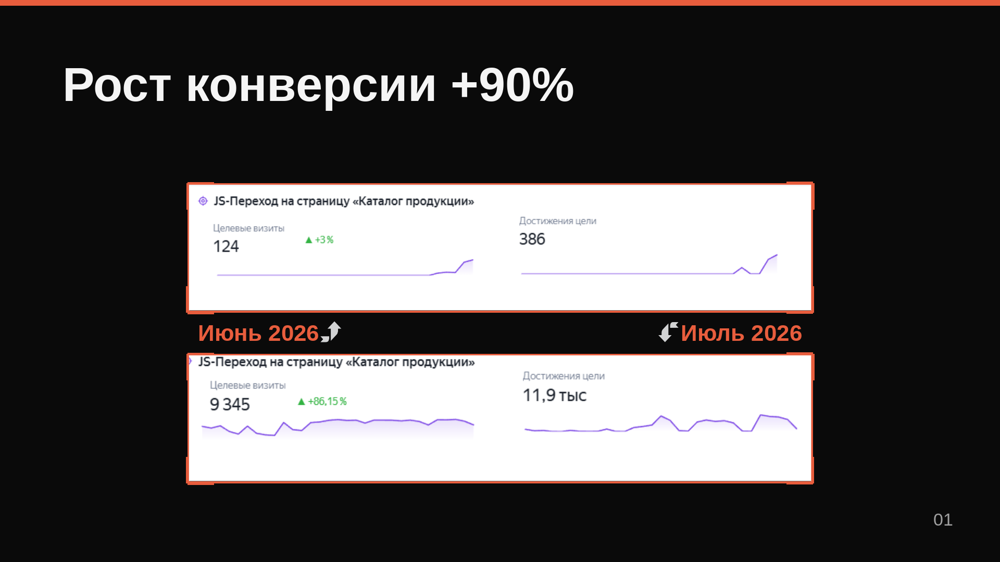
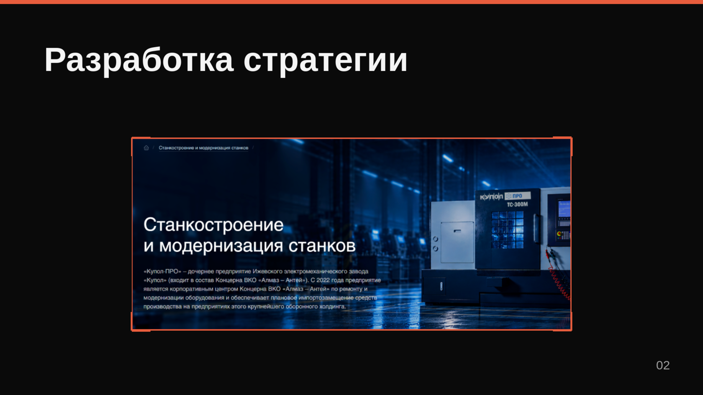
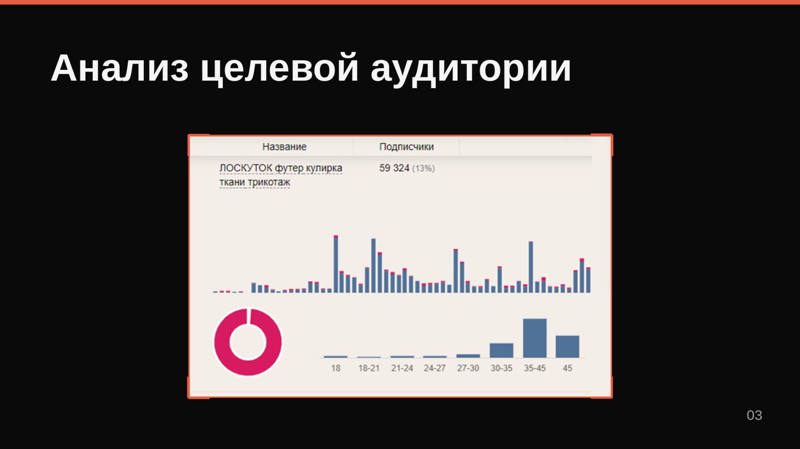
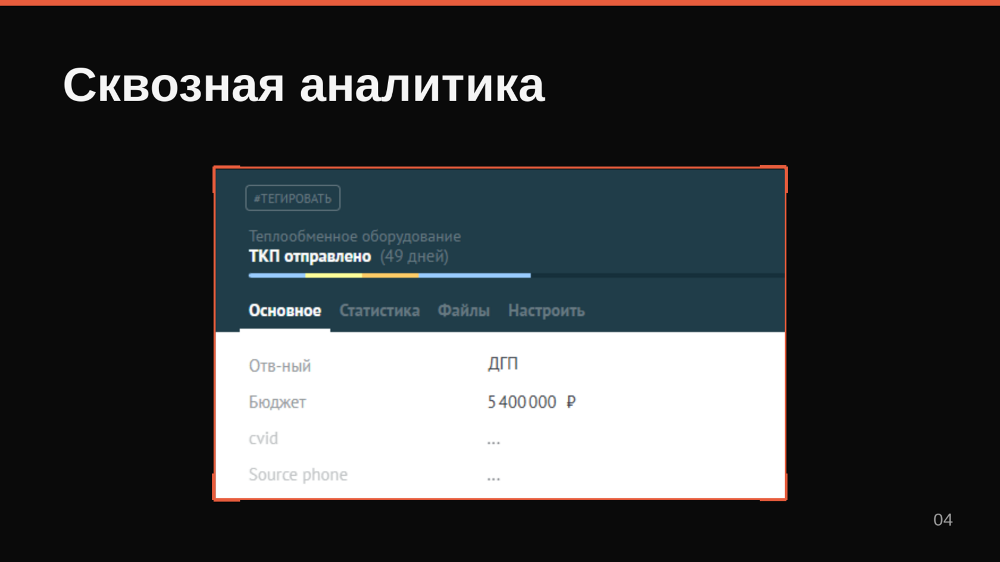
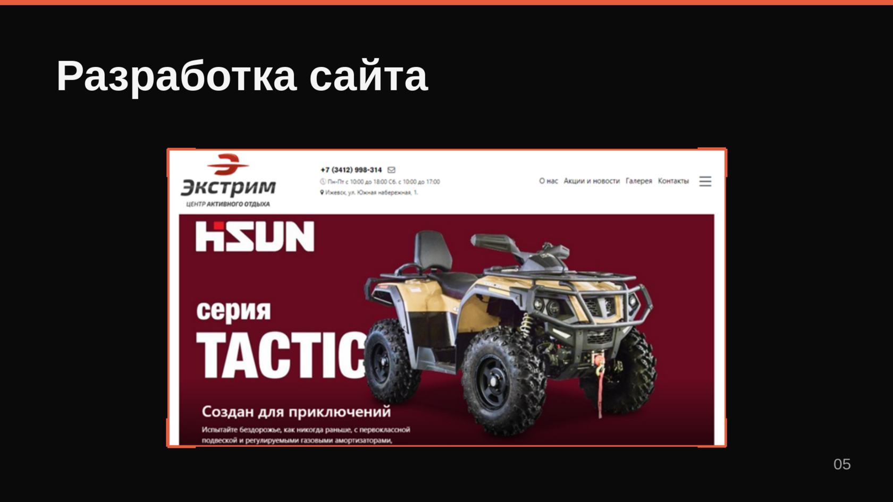
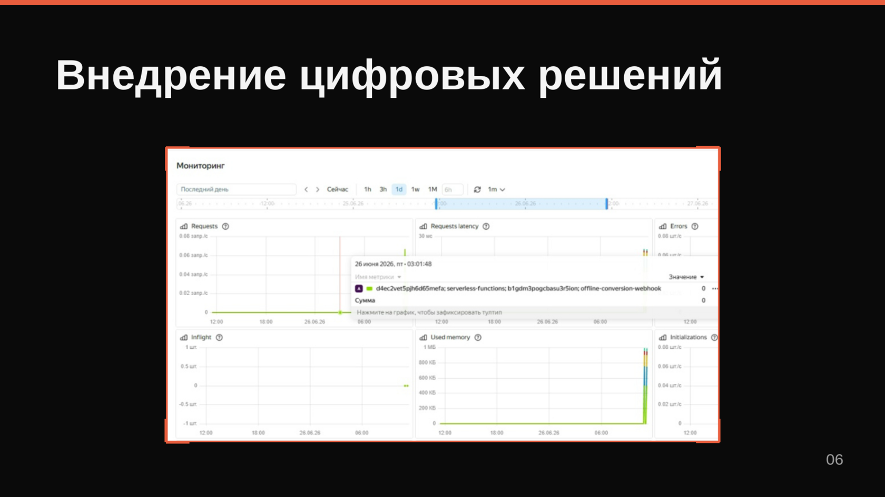

Стратегия продвижения
Анализирую бизнес, конкурентов, определяю цели и аудитории, проектирую воронки и каналы трафика.

Обо мне →Помогаю бизнесу находить точки роста, запускать рекламу и видеть, какие каналы действительно приводят клиентов и деньги.
Анализирую бизнес, конкурентов, определяю цели и аудитории, проектирую воронки и каналы трафика.
Запускаю и оптимизирую рекламные кампании с контролем качества лидов и еженедельным отчетом по KPI.
Связываю рекламу, сайты, Метрику и CRM, чтобы видеть путь от клика до сделки, передавать офлайн-конверсии и получать больше целевых лидов.
Изучаю посадочные страницы, выявляю проблемные места и предлагаю проверенные решения для роста конверсий. При необходимости помогаю быстро разработать качественный сайт на замену или сделать его с нуля.
Оптимизация присутствия бизнеса в ответах поисковых и AI-систем. Ваши потенциальные клиенты всё чаще спрашивают у нейросетей — я помогаю быть там, где они ищут.
Рынок, продукт, ЦА, ключевые метрики, конкуренты и текущий маркетинг.
Каналы продвижения, воронка, KPI и точки роста.
Реклама, сайт, аналитика и интеграции.
Обучение стратегий Яндекс Директа на качественных данных с передачей офлайн-конверсий и квал.лидов из CRM.
Ниша - B2B, продукт - промоборудование стоимостью более 200 тыс.руб. Пересобрали семантику, структуру рекламных кампаний и систему оптимизации.
Снизить стоимость лида и повысить конверсию рекламных кампаний в Яндекс.Директ.
Настроили передачу данных о квалифицированных лидах по протоколу API v2 для обучения стратегий Яндекс.Директ. Перезапустили рекламные кампании с новой семантикой.
Конверсии выросли на 90%, стоимость лида снизилась на 61%, рекламный бюджет сократился на 26%.

Анализ бизнеса, конкурентов и целевой аудитории. Определение каналов привлечения и точек роста.
Сайт в разработке, нужна стратегия запуска продвижения для промышленного B2B с длинным циклом сделки.
1. Проработана воронка (3 этапа).
2. Собрано семантическое ядро (130 запросов).
3. Проведен анализ 27 конкурентов.
4. Отрисована структура сайта в Figma.
5. Сделаны ТЗ для дизайна и вёрстки.
6. Подготовлен медиаплан запуска в Яндекс.Директ.
Готовая стратегия запуска с конкретными каналами, бюджетами и KPI. Сайт: kupolpro.ru

Тематика группы: трикотаж мерными лоскутами. Подбор и анализ конкурентов, сегментация аудитории, построение портрета ЦА.
Понять, кто аудитория конкурентов, какие у них интересы и поведение, чтобы выстроить эффективное продвижение.
1. Подобрали 6 групп ВК конкурентов (от 5 000 до 60 000 подписчиков).
2. Проанализировали активность, процент заказов за 30 дней.
3. Провели сегментацию по возрасту, интересам, гео, наличию семьи и детей.
4. Построили портрет целевой аудитории конкурентов для настройки рекламной компании.
Готовый портрет ЦА с сегментацией.
Сервисы: Barkov.net, Pepper.ninja, Segmento-target. Группа: loskutok_izh. Сентябрь, 2023.

Связали данные Яндекс.Метрики, рекламных кампаний и CRM, чтобы видеть фактический вклад каналов в продажи.
Нужно отслеживать квалифицированных лидов с рекламы до этапа договора в CRM, чтобы оптимизировать рекламные кампании по реальным продажам.
Вручную объединили идентификаторы Метрики и utm-метки с данными по сумме сделок в amoCRM. Настроили передачу офлайн-конверсий через Callibri.
За первые 2 месяца зафиксированы сделки на сумму свыше 5 млн ₽.
Стали считать ROMI для оптимизации рекламных кампаний.

Тематика сайта: новые бренды китайских квадроциклов в России. Разработка с нуля под ключ за 14 дней.
Создать сайт для продажи квадроциклов HISUN — нового бренда китайских квадроциклов на российском рынке.
Разработка сайта с нуля под ключ за 14 дней. Дизайн на основе каталогов поставщика, тиражное решение 1С-Битрикс. Команда: разработчик-фулстэк, менеджер проекта/аналитик. Продвижение: контекстная реклама Яндекс.Директ.
Запущен лендинг квадро18.рф.
Сервис: 1С-Bitrix Landing page. Май, 2022.

Бизнес видел в Метрике заявки, но не знал, какие из них стали квал.лидами и оплатами. Рекламу невозможно было оптимизировать по качеству лидов.
За 2 месяца без внешних разработчиков и платных сервисов разработано серверное приложение для автоматической передачи офлайн-конверсий из CRM с привязкой к ID визита.
Настроена автоматическая связка amoCRM → Приложение.
1. Приложение запрашивает и передаёт данные сделки из CRM в Метрику через API.
2. Метрика связывает конверсию с рекламным источником.
3. Данные передаются в Яндекс.Директ для оптимизации рекламных кампаний.

Хотите так же? Расскажите о своем проекте
и обсудим, как я могу быть полезна вашему бизнесу
Я не начинаю с настройки рекламы.
Сначала разбираюсь, как и на чем бизнес зарабатывает, кто конкуренты, какая воронка, где теряются лиды, и что происходит после клика по объявлению. Для меня важны не просто показатели в рекламном кабинете, а путь от рекламы до сделки и эффективность, измеримая в деньгах.
Специализируюсь на управлении контекстной рекламой с внедрением CRM и сквозной аналитики, в том числе для дорогих продуктов и сложных ниш с длительным циклом принятия решения. Работаю с B2B- и e-commerce-проектами, есть опыт настройки рекламных кампаний для образовательных и медицинских услуг.
«Юлия, хочу искренне поблагодарить тебя за профессиональную и при этом по-настоящему вовлечённую работу над нашим проектом. Ты глубоко изучила сайты конкурентов, выстроила для нас продуманную воронку продаж, помогла систематизировать процессы в CRM и подключить коллтрекинг — благодаря тебе многие вещи стали понятными и управляемыми. Отдельно отмечу запуск рекламной кампании в Яндекс.Директ: всё было сделано стратегически и с вниманием к деталям. Тщательный анализ сайта и рекомендации по улучшению юзабилити дали ощутимый результат — конверсия выросла, увеличилось количество целевых звонков и обращений. Мы видим реальные бизнес-показатели, и это лучший показатель качества твоей работы.»
«Юля, спасибо за отличную работу по настройке контекстной рекламы и аудиту посадочных страниц, очень ценю наше сотрудничество! Офферы и креативы, которые ты разработала, заметно подняли вовлечённость аудитории, а ещё отмечу, что твой ответственный подход к проработке семантики для сложных и специфичных ниш не раз уже помог нам оптимизировать рекламный бюджет и улучшить показатели. Всегда с интересом слежу за тем, как оперативно ты осваиваешь новые инструменты и технологии. Будем продолжать совместные проекты с тобой и всегда рады рекомендовать тебя заказчикам и коллегам. Спасибо тебе за профессионализм и вовлечённость!»
Расскажите о вашей текущей ситуации и потребностях бизнеса. На связи обсудим план действий.